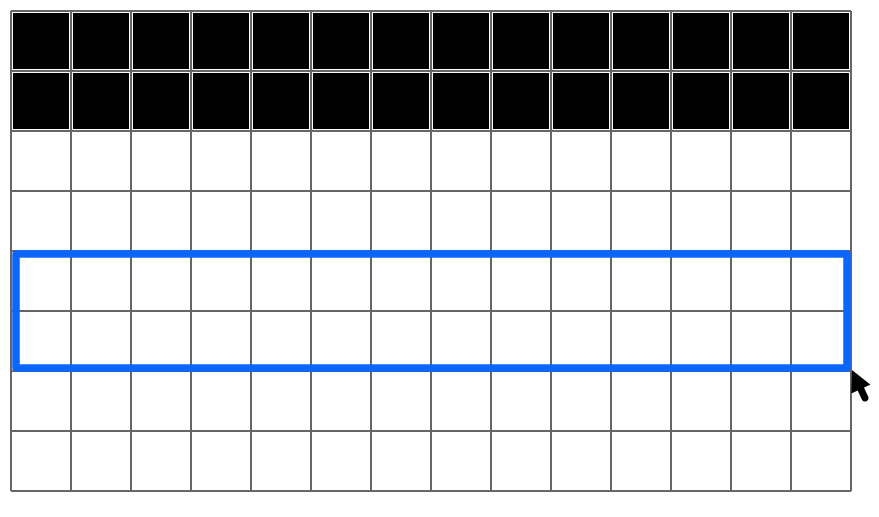
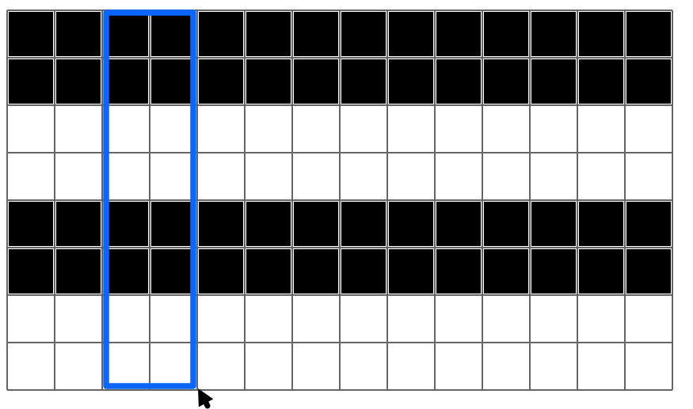
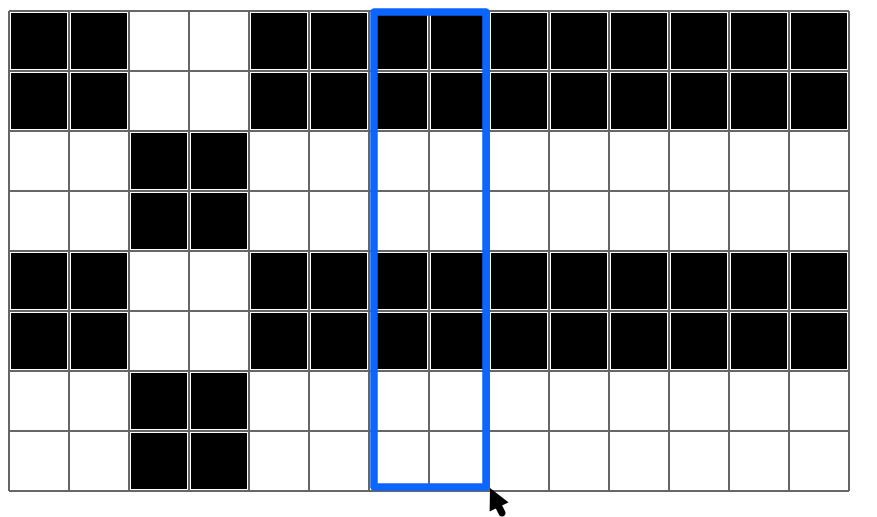
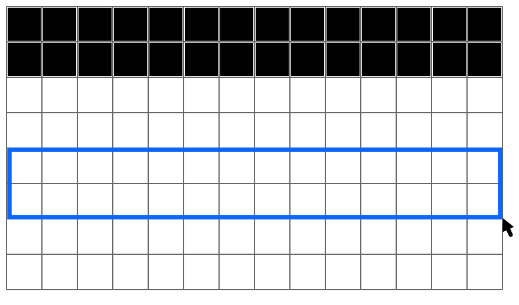
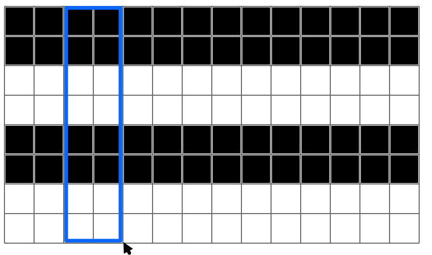
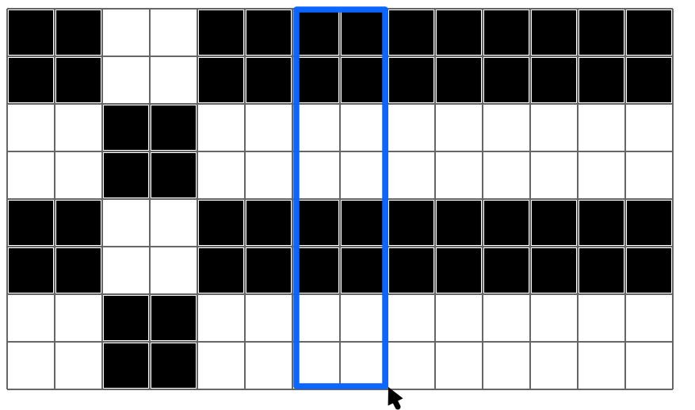

Rectangles inversés
Reproduisez le motif dans la grille du bas.
Vous pouvez inverser la couleur d'une zone rectangulaire : glissez d'un coin à l'autre en restant appuyé.
Il est possible de réussir en inversant seulement 2 zones.
Essayez de réussir en inversant seulement 5 zones.
Il est possible de réussir en inversant seulement 4 zones.
| Objectif : | ||
|
Votre dessin : |
|


 




